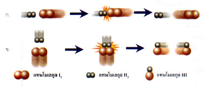
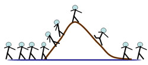
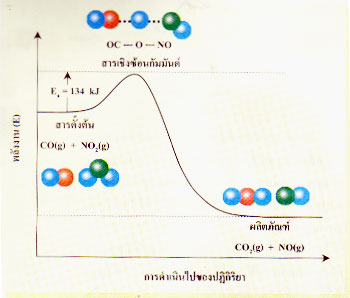
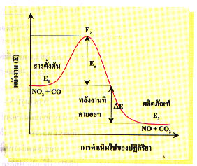
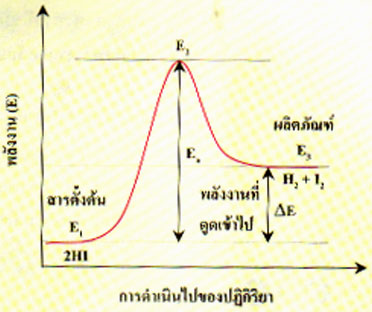
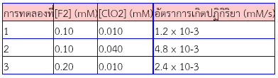

1 ความหมายของอัตราการเกิดปฏิกิริยาเคมี
อัตราการเกิดปฏิกิริยาเคมีหมายถึง ความเร็วที่ตัวทำปฏิกิริยาเปลี่ยนไปเป็นสารผลิตภัณฑ์ต่อหน่วยเวลา โดยที่หน่วยความเข้มข้นของสารเป็นmol/dm3ดังนั้นอัตราการเกิดปฏิกิริยาเคมีจึงมีการเปลี่ยนแปลงความเข้มข้นของสารต่อวินาทีชั่วโมง หรือวัน ทั้งนี้ขึ้นอยู่กับปฏิกิริยาเกิดเร็วหรือช้าเพียงใด
ในการศึกษาอัตราการเกิดปฏิกิริยาเคมีจะต้องรู้ถึงชนิดของปฏิกิริยา ในที่นี้จะจำแนกชนิดของปฏิกิริยาออกเป็น 2 ประเภท ดังนี้
1.
ปฏิกิริยาเนื้อเดียว (homogeneous reaction) จัดเป็นปฏิกิริยาที่สารตั้งต้นทั้งหมดอยู่ในสถานะเดียวกัน
CH4(g)+ 2O2(g)---->CO2(g) + 2H2O(g)
2.
ปฏิกิริยาเนื้อผสม (heterogeneous reaction) จัดเป็นปฏิกิริยาที่สารต่าง ๆ ไม่ได้อยู่ในสถานะเดียวกัน
3HCl(aq) + HNO3(aq)--->Cl2(g) + NOCl(g) + 2H2O(l)
การทราบชนิดของปฏิกิริยาจะทำให้ศึกษาปัจจัยที่มีผลต่ออัตราการเกิดปฏิกิริยานั้นได้ง่ายขึ้น
2.ชนิดของอัตราการเกิดปฏิกิริยาเคมี
อัตราการเกิดปฏิกิริยาเคมีหรืออาจจะเรียกย่อๆ ว่า อัตราการเกิดปฏิกิริยา ซึ่งแบ่งออกเป็น 3 ประเภท คือ
1. อัตราการเกิดปฏิกิริยาเฉลี่ย (Average rate)หมายถึง อัตราการเกิดปฏิกิริยาที่คิดจากการเปลี่ยนแปลงปริมาณสารตั้งต้นที่ลดลง หรือการเปลี่ยนแปลงปริมาณสารผลิตภัณฑ์ที่เพิ่มขึ้นตั้งแต่เริ่มต้นปฏิกิริยาจนสิ้นสุดการเกิดปฏิกิริยาหรือสิ้นสุดการทดลองในหนึ่งหน่วยเวลา มีได้ค่าเดียว
ตัวอย่างปฏิกิริยา A(s) + B(q) → C(aq) + D(q)
อัตราการเกิดปฏิกิริยาเคมีนี้มีค่า = ปริมาณของ C ที่เพิ่มขึ้น / เวลา
= ปริมาณของ D ที่เพิ่มขึ้น / เวลา
= ปริมาณของ B ที่ลดลง / เวลา
= ปริมาณของ A ที่ลดลง / เวลา
2. อัตราการเกิดปฏิกิริยา ณ ขณะใดขณะหนึ่ง (Instantaneous rate)หมายถึง อัตราการเกิดปฏิกิริยาที่คิดจากการเปลี่ยนแปลงปริมาณสารตั้งต้นที่ลดลง หรือการเปลี่ยนแปลงปริมาณสารผลิตภัณฑ์ที่เพิ่มขึ้น ณ ช่วงใดช่วงหนึ่ง ขณะที่ปฏิกิริยากำลังดำเนินอยู่ในหนึ่งหน่วยเวลา ที่ช่วงนั้น อัตราการเกิดปฏิกิริยานี้มีได้หลายค่า ที่เวลาต่างกันจะมีค่าไม่เท่ากัน คือ ตอนเริ่มต้นอัตราการเกิดปฏิกิริยาจะมีค่ามาก เมื่อปฏิกิริยาดำเนินต่อไป อัตราการเกิดปฏิกิริยาจะลดลงตามลำดับ เพราะความเข้มข้นของสารตั้งต้นลดลง
3. อัตราการเกิดปฏิกิริยา ณ จุดใดจุดหนึ่งของเวลาหมายถึง อัตราการเกิดปฏิกิริยาที่คิดจากการเปลี่ยนแปลงปริมาณสารตั้งต้นที่ลดลง หรือการเปลี่ยนแปลงปริมาณสารผลิตภัณฑ์ที่เพิ่มขึ้น ณ เวลาใดเวลาหนึ่งในช่วงสั้นๆ ขณะที่ปฏิกิริยากำลังดำเนินอยู่ในหนึ่งหน่วยเวลา อัตราการเกิดปฏิกิริยา ณ จุดใดจุดหนึ่งของเวลา หาได้โยการนำข้อมูลที่ได้จากการทดลองไปเขียนกราฟ (ให้ปริมาณสารที่เปลี่ยนแปลงเป็นแกนตั้ง เวลาเป็นแกนนอน) เมื่อต้องการทราบอัตราการเกิดปฏิกิริยาที่เวลาใด ก็ให้ลากเส้นตั้งฉากตรงจุดเวลานั้นไปตัดเส้นกราฟลากเส้นสัมผัสให้ผ่านจุดตัด แล้วหาค่าความชัน (Slope) ของเส้นสัมผัส ค่าความชันก็คือ อัตราการเกิดปฏิกิริยา ณ ขณะนั้น
2. แนวคิดเกี่ยวกับการเกิดปฏิกิริยาเคมี
นักวิทยาศาสตร์เชื่อว่าในการเกิดปฏิกิริยาเคมีอนุภาคของสารตั้งต้นซึ่งอาจเป็นโมเลกุล อะตอม หรือไอออนจะต้องชนกัน ถ้าการชนกันทุกครั้งทำให้เกิดปฏิกิริยาเคมี จะมีผลทำให้ปฏิกิริยาเคมีเกิดขึ้นได้เร็ว แต่จาการทดลองพบว่า การชนกันของอนุภาค ไม่สามารถทำให้เกิดปฏิกิริยาทุกครั้ง มีเพียงบางครั้งเท่านั้นที่มีปฏิกิริยาเกิดขึ้น
จากทฤษฎีจลน์ อธิบายได้ว่า ณ อุณหภูมิหนึ่ง โมเลกุลของแก๊สชนิดเดียวกันเคลื่อนที่ด้วยอัตราเร็วแตกต่างกัน โมเลกุลที่เคลื่อนที่ช้าจะมีพลังงานจลน์ต่ำ ส่วนโมเลกุลที่เคลื่อนที่เร็วจะมีพลังงานจลน์สูง ถ้าโมเลกุลที่มีพลังงานจลน์สูงหรือมีอัตราเร็วสูงชนกัน พลังงานที่เกิดจากการชนก็จะมีค่าสูงด้วย ถ้ามีพลังงานสูงพอก็จะเกิดการสลายพันธะในสารตั้งต้น แล้วสร้างพันธะใหม่ขึ้นเป็นสารผลิตภัณฑ์ซึ่งก็คือ การเกิดปฏิกิริยาเคมี แต่ถ้าโมเลกุลที่มีพลังงานจลน์ต่ำเกิดการชนกันและพลังงานมีค่าไม่สูงพอก็จะไม่เกิดปฏิกิริยาเคมีเกิดขึ้น
เมื่ออนุภาคของสารชนกันแล้วจะมีปฏิกิริยาเคมีเกิดขี้นหรือไม่ ยังขึ้นอยู่กับทิศทางในการชนกันด้วย เช่น ปฏิกิริยาระหว่างแก๊สไฮโดรเจนกับแก๊สไอโอดิน ดังสมการ
การที่จะได้แก๊สไฮโดรเจนไอโอไดด์เกิดขึ้น โมเลกุลของแก๊สไฮโดรเจนกับแก๊สไอโอดีนจะต้องมีการชนกันและอาจจัดตัวขณะชนกันได้ดังรูป

เมื่อพิจารณาการชนกันของโมเลกุลH2กับI2พบว่าการชนกันแบบ ข. มีโอกาสที่จะเกิดปฏิกิริยาเคมีได้มากกว่าแบบ ก. เนื่องจากทิศทางในการชนกันของโมเลกุลทั้งสองความเหมาะสม
จากข้อมูลที่กล่าวมาแล้วช่วยให้สรุปได้ว่าปฏิกิริยาเคมีเกิดขึ้นได้เมื่ออนุภาคของสารตั้งต้นชนกันในทิศทางที่เหมาะสม รวมทั้งต้องมีพลังงานที่เกิดจากการชนกันอย่างน้อยที่สุดปริมาณหนึ่งซึ่งเท่ากับ พลังงานก่อกัมมันต์ ใช้สัญลักษณ์ย่อเป็น Ea
พลังงานก่อกัมมันต์เป็นค่าที่คำนวณจากผลการทดลอง ซึ่งในแต่ละปฏิกิริยาจะมีค่าพลังงานก่อกัมมันต์ไม่เท่ากัน โดยปกติโมเลกุลที่มีพลังงานเท่ากับหรือมากกว่าพลังงานก่อกัมมันต์มีจำนวนน้อยมาก เพื่อให้เข้าใจดีขึ้นจึงอาจเปรียบเทียบการเกิดปฏิกิริยาเคมีกับการเดินทางข้ามภูเขาดังรูป

จากรูป คนที่จะเดินข้ามภูเขาได้ต้องแข็งแรงมากหรือมีพลังงานมาก ดังนั้นจำนวนคนที่จะเดินข้ามภูเขาได้ภายในเวลาที่กำหนด จึงขึ้นอยู่กับองค์ประกอบที่สำคัญ 2 ประการ คือ (1) จำนวนคนที่แข็งแรงหรือมีพลังงานมากและ (2) ความสูงของภูเขา
ถ้าอุปมาอุปไมยจำนวนคนที่แข็งแรงหรือมีพลังงานสูงกับจำนวนอนุภาคที่มีพลังงานสูง และความสูงของภูเขากับค่าพลังงานก่อกัมมันต์ของปฏิกิริยานั้น ช่วยให้อธิบายได้ว่าการที่บางปฏิกิริยาเกิดขึ้นช้ามาก เพราะปฏิกิริยานั้นมีค่าพลังงานก่อกัมมันต์สูงมาก และอนุภาคที่มีพลังงานสูงมีจำนวนน้อย โอกาสที่จะชนกันเพื่อให้ได้พลังงานสูงเท่ากับพลังงานก่อกัมมันต์จึงมีน้อยด้วย ในกรณีของปฏิกิริยาที่เกิดได้เร็วก็อธิบายได้ในทำนองเดียวกัน
สำหรับการอธิบายการเกิดปฏิกิริยาเคมีอีกแนวคิดหนึ่งอธิบายว่า เมื่อสารเข้าทำปฏิกิริยากันจะมีสารใหม่เกิดขึ้นเป็นผลิตภัณฑ์ และในระหว่างที่สารตั้งต้นเปลี่ยนเป็นผลิตภัณฑ์นั้น จะมีสารเชิงซ้อนกัมมันต์เกิดขึ้นก่อนเพียงชั่วขณะแล้วสารเชิงซ้อนกัมมันต์ก็สลายให้ผลิตภัณฑ์ต่อไป เช่น ปฏิกิริยาระหว่างแก๊สCO กับNO2เกิดเป็นแก๊สCO2และNO ซึ่งอาจเขียนแผนภาพแสดงดังรูป

ทางด้านสารตั้งต้นจะมีพันธะระหว่างอะตอมC กับO ในโมเลกุลCO และN กับOในโมเลกุล NO2เท่านั้น เมื่อเกิดเป็นสารเชิงซ้อนกัมมันต์ ความแข็งแรงของพันธะระหว่างอะตอมN กับO ในNO2จะลดลง และเริ่มมีพันธะอย่างอ่อน ๆ เกิดขึ้นระหว่างอะตอมของC ในCO กับ O ในNO2เมื่อสารเชิงซ้อนกัมมันต์สลายตัวให้ผลิตภัณฑ์ จะมีการสลายพันธะเดิมระหว่างอะตอม N กับ O และมีพันธะระหว่างอะตอม C กับ O เกิดขึ้นแทนที่ สารเชิงซ้อนกัมมันต์อยู่ในสภาวะที่ไม่เสถียรเพราะมีพลังงานสูงมาก สภาวะดังกล่าวนี้เรียกว่า สภาวะแทรนซิชัน จึงอาจกล่าวได้ว่าพลังงานของสภาวะแทรนซิชันจะมีค่าประมาณพลังงานก่อกัมมันต์นั่นเอง ทั้งนี้เพราะการที่ปฏิกิริยาเคมีจะเกิดขึ้นได้อนุภาคของสารที่ชนกันจะต้องมีพลังงานอย่างน้อยทีสุดเท่ากับพลังงานก่อกัมมันต์
3 พลังงานกับการดำเนินไปของปฏิกิริยา
เนื่องจากเกิดปฏิกิริยาเคมีจะต้องมีพลังงานเข้าไปเกี่ยวข้องด้วย ถ้าเป็นปฏิกิริยาของประกอบไคเวเลนต์จะมีการสลายพันธะของสารตั้งต้น และมีการสร้างพันธะของผลิตภัณฑ์เกิดขึ้น ถ้าพลังานที่ใช้ในการสลายพันธะทั้งหมดรวมกันแล้วมีค่ามากกว่าพลังานได้จากการเกิดพันธะใหม่รวมกันการเปลี่ยนแปลงนั้นจะเป็นประเภทดูดความร้อน ในทางตรงกันข้ามถ้าพลังงานได้จากการเกิดพันธะใหม่รวมกันเปลี่ยนแปลงนั้นจะเป็นประเภทดูดความร้อน ในทางกันข้ามถ้าพลังงานที่ใช้ในการสลายพันธะทั้งหมดรวมกันมีค่าน้อยกว่าพลังานที่เกิดขึ้นเนื่อง จากการสร้างพันธะรวมกัน การเปลี่ยนแปลงนั้นก็จะเป็นประเภทคายความร้อน
ในแง่พลังงานของโมเลกุล ถ้าสารที่เป็นผลิตภัณฑ์มีพลังงานต่ำกว่าสารตั้งต้น ปฏิกิริยานั้นจะเป็นประเภทคายพลังงาน แต่ถ้าสารที่เป็นผลิตภัณฑ์มีพลังงานสูงกว่าตั้งตัน ปฏิกิริยานั้นจะเป็นประเภทดูดพลังงาน
การดำเนินไปของปฏิกิริยาในแง่ของพลังงานของโมเลกุลเมื่อโมเลกุลของก๊าซมาชนกันจนกระทั่งกลายเป็นผลิตภัณฑ์สามารถจะแสดงให้เห็นได้โดยอาศัยกราฟซึ่งจะแสดงความสัมพันธ์ระหว่างพลังงานของสารตั้งต้นพลังงานก่อกัมมันต์ของปฏิกิริยา และพลังงานของผลิตภัณฑ์ดังนี้
ก. ปฏิกิริยาระหว่าง NO2 กับ CO ซึ่งเป็นประเภทคายความร้อน
NO2 (g) + CO(g) →NO (g) + CO2 (g) + 234 kJ
เขียนกราฟแสดงความสัมพันธ์ระหว่างพลังงานกับการดำเนินไปของปฏิกิริยาได้ดังนี้

การเปลี่ยนแปลงพลังงานของปฏิกิริยา NO2 + CO → NO + CO2
E1 คือ พลังงานของสารตั้งต้น
E3 คือ พลังงานผลิตภัณฑ์
Ea คือ พลังงานก่อกัมมันต์ซึ่งเป็นผลต่างระหว่าง E2 กับ E1
E คือ พลังงานของปฏิกิริยาซึ่งเป็นผลต่างระหว่าง E3 กับ E1
ข . ปฏิกิริยา 2HI(g) → H2 ( g) + I2 (g) ซึ่งเป็นปฏิกิริยาประเภทดูดความร้อน

4. ปัจจัยทีมีผลต่ออัตราการเกิดปฏิกิริยา
1.ธรรมชาติของสารตั้งต้น(Nature of reactant)
สำหรับสารต่างชนิดกันจะสามารถเกิดปฏิกิริยาได้เร็วหรือช้านั้น ขึ้นอยู่กับสมบัติเฉพาะตัวของสารแต่ละชนิด เช่น โลหะโซเดียมทำปฏิกิริยากับน้ำเย็นได้เร็วมาก และเกิดปฏิกิริยารุนแรง ในขณะที่โลหะแมกนีเซียมทำปฏิกิริยากับน้ำเย็นได้ช้า แต่เกิดได้เร็วขึ้นเมื่อใช้น้ำร้อน ที่เป็นเช่นนี้เพราะว่า โลหะโซเดียม มีความว่องไวในการเกิดปฏิกิริยาดีกว่าโลหะแมกนีเซียม สารบางชนิดจะทำปฏิกิริยาได้ยาก เช่นการสึกกร่อนของหิน การเกิดสนิมเหล็กบางชนิดจะทำปฏิกิริยาได้ง่าย เช่นการระเบิดของประทัด
2.ความเข้มข้นของสารตั้งต้น
ปฏิกิริยาเคมีโดยทั่วไป อัตราการเกิดปฏิกิริยาเคมี มักขึ้นอยู่กับความเข้มข้นของสารตั้งต้นที่เข้าทำปฏิกิริยา เช่น ปฏิกิริยาระหว่างโลหะกับกรด ถ้าเริ่มต้นใช้กรดที่มีความเข้มข้นสูงจะเกิดการกัดกร่อนโลหะได้เร็วกว่ากรดที่มีความเข้มข้นต่ำ ดังนั้นในกระบวนการผลิตทางอุตสาหกรรม จึงต้องใช้สารเริ่มต้นที่มีความเข้มข้นสูงพอที่จะทำให้ปฏิกิริยาเกิดด้วยอัตราที่ให้ปริมาณผลิตภัณฑ์ได้ตามความต้องการในเวลาสั้น ซึ่งเป็นการลดต้นทุนทางหนึ่ง สำหรับสารปฏิกิริยาที่มีสารตั้งต้นมากกว่าหนึ่งชนิด อัตราการเกิดปฏิกิริยาอาจขึ้นอยู่กับความเข้มข้นของสารตั้งต้นเพียงสารใดสารหนึ่งหรือทุกสารก็ได้ แต่มีปฏิกิริยาบางชนิดที่อัตราการเกิดปฏิกิริยาไม่ขึ้นอยู่กับความเข้มข้นของสารตั้งต้นเลย กล่าวคือไม่ว่าจะเปลี่ยนความเข้มข้นของสารตั้งต้นอย่างไร อัตราการเกิดปฏิกิริยาคงที่เสมอ เช่น ปฏิกิริยาการกำจัดแอลกอฮอล์ในเลือดของคน อัตราการสลายตัวของแอลกอฮอล์ในร่างกายจะคงที่ไม่ว่าปริมาณของแอลกอฮอล์ในเลือดจะมากหรือน้อยเพียงใดก็ตาม
3.พื้นที่ผิวของสารตั้งต้น
พื้นที่ผิวของสารตั้งต้นจะมีอิทธิพลต่ออัตราการเกิดปฏิกิริยาเคมีก็ต่อเมื่อปฏิกิริยาเคมีที่เกิดขึ้นนั้นเป็นปฏิกิริยาเคมีแบบเนื้อผสมที่มีสารตั้งต้นเป็นของแข็งร่วมอยู่ด้วย เช่น การเกิดปฏิกิริยาระหว่าง Mg และ HCl ดังสมการ
Mg (s) + HCl ( aq) -------> MgCl2(aq) + H2(g)
ปฏิกิริยาของโลหะแมกนีเซียมกับกรดไฮโดรคลอริกจะเกิดแก๊สไฮโดรเจนซึ่งถ้าทำให้ลวดแมกนีเซียมเป็นชิ้นเล็ก ๆ จะพบว่าปฏิกิริยาจะเกิดเร็วกว่าลวดแมกนีเซียมที่เป็นแผ่นหรือขดเป็นสปริง
การเพิ่มพื้นที่ผิวของของแข็งให้สัมผัสกับของเหลวมากขึ้นจะช่วยให้ปฏิกิริยาเกิดได้เร็วขึ้นหลักการนี้นำมาใช้ในชีวิตประจำวัน เช่น ในการรับประทานอาหารนักโภชนาการแนะนำให้เคี้ยวอาหาร
ให้ละเอียดก่อนกลืนลงท้อง เพราะการเคี้ยวอาหารให้ละเอียดเป็นการเพิ่มพื้นที่ผิวของอาหารให้มากขึ้นทำให้กรดและเอนไซม์ในน้ำย่อยในกระเพาะอาหารทำปฏิกิริยากับอาหารได้เร็วขึ้น อาหารจึงย่อยง่ายป้องกันการเกิดอาการจุกเสียด หรือ การเคี้ยวยาให้ละเอียดก่อนกลืน ก็เป็นการเพิ่มพื้นที่ผิวเพื่อให้ยาละลายและออกฤทธิ์ได้ดียิ่งขึ้น
4.อุณหภูมิ
ปฏิกิริยาเคมีต่างๆ อัตราการเกิดปฏิกิริยาจะเพิ่มขึ้นเมื่ออุณหภูมิสูงขึ้น เช่น การบ่มผลไม้ในภาชนะที่มีฝาปิด จะสุกเร็วกว่าการไว้ข้างนอก หรือการเก็บอาหาร ถ้าเก็บไว้ในตู้เย็นจะเสียช้ากว่าเก็บไว้ข้างนอกโลหะแมกนีเซียมทำปฏิกิริยากับน้ำเย็นได้ช้า แต่เมื่อทำปฏิกิริยากับน้ำร้อนได้เร็วขึ้น
5.ตัวเร่งปฏิกิริยาและตัวหน่วงปฏิกิริยา
5.1 ตัวเร่งปฏิกิริยา (Catalyst )คือ สารที่เติมลงไปในปฏิกิริยาแล้ว ทำให้ปฏิกิริยาเกิดได้เร็วขึ้นหรือทำให้อัตราการเกิดปฏิกิริยาเกิดได้เพิ่มขึ้น โดยที่ตัวเร่งปฏิกิริยาอาจจะมีส่วนร่วมในการเกิดปฏิกิริยาหรือไม่ก็ได้ แต่เมื่อสิ้นสุดปฏิกิริยา ตัวเร่งปฏิกิริยาเหล่านี้จะต้องมีปริมาณเท่าเดิมและมีสมบัติเหมือนเดิม ตัวอย่างของตัวเร่งปฏิกิริยาที่ใกล้ตัวเราที่สุดได้แก่ เอนไซม์ในร่างกาย เช่น อะไมเลสในน้ำตาลที่ใช้ย่อยแป้ง หรือเพปซินในกระเพาะอาหารที่ใช้ย่อยโปรตีน
5.2 ตัวหน่วงปฏิกิริยา ( Inhibiter ) คือ สารที่เติมลงไปในปฏิกิริยาแล้วทำให้ปฏิกิริยาเกิดช้าลง หรือทำให้อัตราการเกิดปฏิกิริยาช้าลง และเมื่อสิ้นสุดปฏิกิริยา ตัวหน่วงปฏิกิริยาจะกลับคืนมาเหมือนเดิมและมีมวลคงที่ แต่สมบัติทางกายภาพเปลี่ยนแปลงไป เช่น ขนาด รูปร่าง ตัวอย่างที่พบในชีวิตประจำวัน เช่น การเติมวิตามินอี หรือสาร B.H.T. ลงไปในน้ำมันพืชเพื่อป้องกันการเหม็นหืน การเติมโซเดียมเบนโซเอตลงในอาหารสำเร็จรูปเพื่อป้องกันการบูดเน่าของอาหาร
ปัจจุบันวิทยาศาสตร์และเทคโนโลยีเจริญก้าวหน้ามาก ทำให้มีการคิดค้นสิ่งอำนวยความสะดวกมากมาย เช่น รูปแบบต่าง ๆ ของยวดยานพาหนะ ทางบก ทางน้ำ และทางอากาศยารักษาโรค เครื่องใช้อุปกรณ์ต่าง ๆ เป็นต้น แต่สิ่งเหล่านี้มีผลเสียเช่นเดียวกัน เช่น แบตเตอรีชนิดต่าง ๆ ซึ่งทำด้วยโลหะสังกะสี นิกเกิล แคดเมียม และปรอท สารเหล่านี้มีอันตรายต่อมนุษย์ทั้งสิ้น ถ้าการใช้ การจัดเก็บ การกำจัดขยะในกระบวนการผลิต และการใช้เป็นไปอย่างไม่ถูกวิธี ก็จะเป็นอันตรายต่อมนุษย์ทั้งสิ้น
5. กฎอัตรา
การเปลี่ยนแปลงความเข้มข้นของสารในปฏิกิริยามักจะทำให้อัตราการเกิดปฏิกิริยาเกิดการเปลี่ยนแปลงด้วย ซึ่งเราใช้กฎอัตรา (rate law)หรือสมการอัตรา (rate equation)แสดงความสัมพันธ์ระหว่างอัตราการเกิดปฏิกิริยากับความเข้มข้นของสารตั้งต้น
เราจำเป็นต้องทดลองหาอัตราการเกิดปฏิกิริยาเมื่อเปลี่ยนแปลงความเข้มข้นของสาร A และสาร B โดยให้สารชนิดหนึ่งคงที่ แล้วเปลี่ยนความเข้มข้นของสารอีกชนิดหนึ่ง เราก็จะทราบอัตราการเกิดปฏิกิริยาของปฏิกิริยานี้ว่าขึ้นอยู่กับสารชนิดใด
ตัวอย่างจงหากฎอัตราของปฏิกิริยาต่อไปนี้

จากผลการทดลองครั้งที่ 1 และ 3 จะเห็นว่า ถ้าให้ [ClO2] คงที่ แต่เพิ่ม [F2] เป็น 2 เท่า อัตราการเกิดปฏิกิริยาจะเพิ่มเป็น 2 เท่า แสดงว่าอัตราการเกิดปฏิกิริยาแปรผันโดยตรงกับ [F2] ในทำนองเดียวกัน ในการทดลองครั้งที่ 1 และ 2 เมื่อเพิ่ม [ClO2] เป็น 4 เท่า และให้ [F2] คงที่ อัตราจะเพิ่มเป็น 4 เท่าเช่นกัน แสดงว่า อัตราการเกิดปฏิกิริยาก็แปรผันกับ [ClO2] ด้วย เราจึงสามารถสรุปความสัมพันธ์ระหว่างอัตราการเกิดปฏิกิริยากับความเข้มข้นได้ เราเรียกสมการนี้ว่ากฎอัตรา (rate law)ซึ่งหมายถึงสมการที่แสดงความสัมพันธ์ระหว่างอัตราการเกิดปฏิกิริยากับค่าคงที่อัตราและความเข้มข้นของสารตั้งต้น
การกฎอัตราโดยการทดลอง
ขั้นแรกในการหากฎอัตรา คือ หาอัตราการเกิดปฏิกิริยา
-สำหรับปฏิกิริยาที่เกิดขึ้นในสารละลายเรามักติดตามการเปลี่ยนแปลงความเข้มข้นของสารได้ด้วยเทคนิคทางสเปกโทรสโกปี (spectroscopy)
-ถ้าปฏิกิริยามีไอออนเกี่ยวข้องด้วยก็อาจตรวจสอบความเข้มข้นด้วยการนำไฟฟ้า
-สำหรับปฏิกิริยาของแก๊ส ก็นิยมวัดความดัน
ถ้าปฏิกิริยามีสารตั้งต้นชนิดเดียว ก็หากฎอัตราได้ง่ายๆ โดยวัดอัตราเริ่มต้นของปฏิกิริยาที่ความเข้มข้นของสารตั้งต้นหลายๆ ค่า เช่น ถ้าเพิ่มความเข้มข้นของสารตั้งต้นเป็น 2 เท่าแล้วอัตราการเกิดปฏิกิริยาเพิ่มขึ้นเป็น 4 เท่า ก็แสดงว่าเป็นปฏิกิริยาอันดับสอง
สำหรับปฏิกิริยาที่มีสารตั้งต้น 2 ชนิดขึ้นไป ก็จะหากฎอัตราจากการแปรความเข้มข้นของสารตั้งต้นทีละชนิด โดยให้ความเข้มข้นของสารตั้งต้นตัวอื่นคงที่ แล้วดูที่การเปลี่ยนแปลงของอัตราการเกิดปฏิกิริยา เราก็จะสามารถหาอันดับของปฏิกิริยาเมื่อยึดสารตั้งต้นแต่ละชนิดเป็นหลักได้ เราเรียกวิธีการหาอันดับของปฏิกิริยาแบบนี้ว่าไอโซเลชัน (isolation method)
สิ่งที่ต้องคำนึงถึงเสมอในการหากฎอัตรา
1. กฎอัตรานั้นจะต้องหาจากการทดลองเท่านั้น ไม่สามารถเดาจากสมการที่แสดงปฏิกิริยาได้เราสามารถคำนวณหาอันดับของปฏิกิริยาและค่าคงที่อัตราของปฏิกิริยาได้จากความเข้มข้นของสารตั้งต้นและอัตราการเกิดปฏิกิริยาเริ่มต้น (initial reaction rate)
2. อันดับของปฏิกิริยาจะพิจารณาจากความเข้มข้นของสารตั้งต้นเท่านั้น
3. อันดับของปฏิกิริยาไม่ได้มีความสัมพันธ์กับสัมประสิทธิ์ปริมาณสารสัมพันธ์ (stoichiometric coefficient) ของสารตั้งต้นในสมการที่ดุลแล้วแต่อย่างใด
กฎอัตรามีประโยชน์อย่างไร
ถ้าเรารู้ค่าคงที่อัตราและความเข้มข้นของสารตั้งต้นแล้ว เราก็สามารถคำนวณอัตราการเกิดปฏิกิริยาจากกฎอัตราได้ ในทางกลับกัน เราสามารถที่จะใช้สมการนี้ในการหาความเข้มข้นของสารตั้งต้น ณ เวลาใดๆ ในขณะที่เกิดปฏิกิริยาได้ด้วย
6. กลไกของปฏิกิริยาเคมี
- ปฏิกิริยาเคมีโดยทั่วไปไม่ได้เกิดขึ้นในขั้นตอนเดียว (single step) ตามสมการเคมี แต่จะเกิดขึ้นเป็นขั้นย่อยๆที่เรียกว่า Elememtary reaction
- Elementary reaction คือ ปฏิกิริยาที่เกิดขึ้นในขั้นตอนเดียว และอันดับของปฏิกิริยาจะเท่ากับจำนวนโมเลกุลอะตอมของสารตั้งต้นที่เข้าทำปฏิกิริยาดังนั้น อันดับปฏิกิริยาของ Elememtary reaction จึงเรียกว่า molecularity
Elementary reaction ที่มี molecularity เป็น 1 เรียกว่า umimolecular reaction
2 เรียกว่า bimolecular reaction
3 เรียกว่า termolecular reaction
ตัวอย่างของumimolecular reaction เช่น ปฏิกิริยา isomerization ของ cyclopropane ไปเป็น propane
โดยปกติแล้ว กฎอัตรา จะหาได้จากการทดลองเท่านั้น แต่ถ้าปฏิกิริยานั้นเป็น single step reaction หรือเป็น elementary reaction กฎอัตราสามารถดูได้จากสมการเคมีที่ดุลแล้ว
Elementary reaction ที่มี molecularity มากกว่า 2 เกิดขึ้นได้ยากมากดังนั้นปฏิกิริยาใดที่มี molecularity ตั้งแต่ 2 ขึ้นไป น่าจะไม่ใช่ elementary reaction